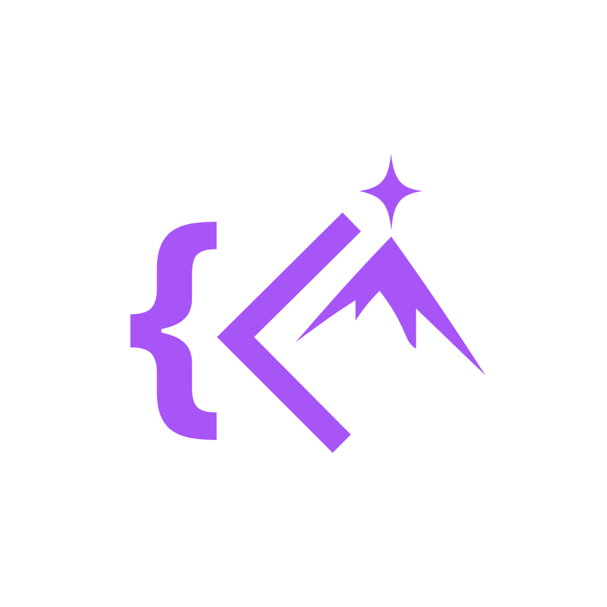

Sabes qué nota necesitas.
Media ponderada por materia y lo que te falta para aprobar.

Una app de KiboCode. {{ICON:chevron-right}}Planea tu día, resuelve lo que te frena y recuerda lo que aprendes.
{{NAME}} es para PC con Windows. y ábrelo en tu ordenador.
Dos modos
Elige tu modo y la app habla tu idioma: proyectos y bloqueos, o materias, dudas y entregas. Cada perfil guarda sus datos por separado.
Tareas, bloqueos técnicos, comandos y tus commits de Git del día.
Funciones
Media ponderada por materia y lo que te falta para aprobar.
Bloques de enfoque con descansos automáticos.
Ctrl K desde cualquier pantalla.
Tus apuntes vuelven justo antes de que los olvides.
Ctrl Shift Espacio desde cualquier programa.
Un día antes, una hora antes. Nunca más tarde.
Tu semana resumida en PDF, Markdown o CSV.
Lo que subiste hoy pasa al plan con un clic.
Arrastra cada problema hasta «Resuelto».
Privacidad
Sin cuenta, sin servidores, sin rastreo. Funciona sin internet, y esta página tampoco usa cookies.
Instalación
Tres pasos, como cualquier programa de Windows. Sin contraseña de administrador.
Al terminar, haz clic en el archivo arriba a la derecha de tu navegador, o búscalo en Descargas.
Pulsa Más información y luego Ejecutar de todas formas. Es normal con las apps nuevas.
Pulsa Instalar. Al terminar, {{NAME}} se abre sola y queda en el menú Inicio.
Sí. Sin suscripción, sin anuncios y sin cuenta.
Windows muestra ese aviso con los programas nuevos que aún no tienen una firma digital de pago. No significa que tengan virus. Pulsa Más información → Ejecutar de todas formas. Si quieres comprobar que el archivo es el original, su huella SHA-256 está al final de esta sección.
Un PC con {{REQUIREMENTS}}. Internet solo para descargarla.
En tu propio PC, en la carpeta de datos de tu usuario. Nada se envía a ningún servidor.
Descarga la versión nueva desde esta página e instálala encima: tus datos se conservan.
Configuración → Aplicaciones → Aplicaciones instaladas, busca {{NAME}} y pulsa Desinstalar.
Por ahora solo para Windows.
Huella SHA-256 de {{INSTALLER}}:{{SHA256}}
Ahora sigue estos pasos:
¿No empezó? Descárgala aquí.